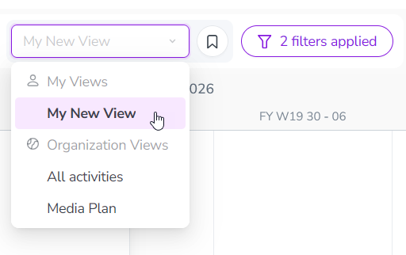

Save activity display settings as a view
You can use Views to save your display settings for the  Activities section in Uptempo Campaign Management, such as applied filters, groupings, and color-coding. Saving display settings as a view lets you quickly and easily apply the same settings again at any time.
Activities section in Uptempo Campaign Management, such as applied filters, groupings, and color-coding. Saving display settings as a view lets you quickly and easily apply the same settings again at any time.
You can:
Save your current display settings in the Timeline or Summary display modes as a view at any time.
Select a previously created view to quickly apply its saved display settings again.
Optionally, link views to column presets (saved Summary table configurations) to also automatically apply the linked column preset when a view is selected.
Create views
After you have customized the display settings in the Timeline or Summary display modes, you can save your settings as a view. The following display settings are saved to views:
 Filter Activities
Filter ActivitiesGroup Activities
Show Parent Activities
 Select Color-Coding
Select Color-Coding / Select Timeline Scale
/ Select Timeline Scale
You can create as many views as you need. Whenever you select a view later, all the display settings saved to the view are immediately applied again.
Create a new view
In the
 Activities section, use the toolbar controls to apply the display settings that you want to save (filtering, grouping, color coding, etc.).
Activities section, use the toolbar controls to apply the display settings that you want to save (filtering, grouping, color coding, etc.).You can do this in either the Timeline or Summary display modes.
After you apply at least one display setting, a badge is displayed on the button to indicate that you can save the current display setting configuration as a view:

To save the display settings as a view, click
 View Options. The View options panel opens.
View Options. The View options panel opens.Type a name for your new view into the View Name field.
Optional: If you are an administrator, you can set the new view to be available to all users in your Uptempo instance:
Click
 Only for me on the View Name field, then select For my organization instead.
Only for me on the View Name field, then select For my organization instead.
To finish creating your new view, click Save as new.
The View options panel closes, and your new view now appears in the Select View menu:


You have saved your display settings as a view, and can now select it at any time to quickly apply the same display settings.
Copy a view
You can also create a new view by copying an existing view.
Apply the view you want to copy (see Apply a view).
Click
View Options and enter a new name into the View Name fieldTo finish copying the view, click Save as new.
The resulting view will have the same display settings as the view it was copied from, and you can use this as a base to make additional changes (see Edit views).
Apply a view
After you have saved display settings as a view, you can quickly recall them by applying the view to the Timeline or Summary display modes in the  Activities section.
Activities section.
Apply an existing view
In the
Activities section, click the Select View menu to see available views. Views are displayed in two sections:- My Views
Lists personal views that you have created yourself. If you have not created any views yet, this section is hidden.
- Organization Views
Lists views created by administrators for all users in your Uptempo instance. This section is always visible. If no Organization Views have been created yet, it will list only the default All activities view.
Click on the view you want to use to apply it.
The display settings associated with the view are immediately applied to the Activity Hierarchy, and the display setting controls update to reflect the currently applied settings.
To remove all display settings again, select the view All activities from Views > Organization Views.
Edit views
After you have created a view, you can make changes to it at any time, such as changing its name and display settings.
If you are an administrator, you can also convert an  Only for me view into a For my organization view (and vice versa).
Only for me view into a For my organization view (and vice versa).
Rename a view
In the
Activities section, use the Select View menu to select the view you want to rename.You can do this in either the Timeline or Summary display modes.
Click
View Options. The View options panel opens.Type the new name for the view into the View Name field.
To apply your changes, click Save changes.
You have renamed the view, and it will be displayed in the Select View menu under its new name.
Change a view's saved display settings
In the
Activities section, use the Select View menu to select the view you want to rename.You can do this in either the Timeline or Summary display modes.
Use the toolbar controls to adjust the display settings as needed. The
View Options button displays a badge to indicate that the view has unsaved changes.Click
View Options. The View options panel opens.To save the new display settings to the selected view, click Save changes.
You have changed the view's display settings, and the new settings will be used whenever you apply the view from now on.
Change a view's type (for administrators)
As an administrator, you can change a view's type from  Only for me to For my organization (and vice versa).
Only for me to For my organization (and vice versa).
In the
Activities section, use the Select View menu to select the view for which you want to change the type.You can do this in either the Timeline or Summary display modes.
Click
View Options. The View options panel opens.Click the currently set view type (
Only for me or For my organization) beside the View Name field. Click the view type that is not currently selected to change to it.To apply your changes, click Save changes.
Delete views
If you no longer need a view, you can delete it at any time.
Delete a view
In the
Activities section, use the Select View menu to select the view you want to delete.You can do this in either the Timeline or Summary display modes.
Click
View Options. The View options panel opens.Click
 Delete View.
Delete View.To permanently delete the view, click Delete in the confirmation dialog.
The activity hierarchy table reloads with no filters or groupings applied, and the deleted view no longer appears in the Select View menu.